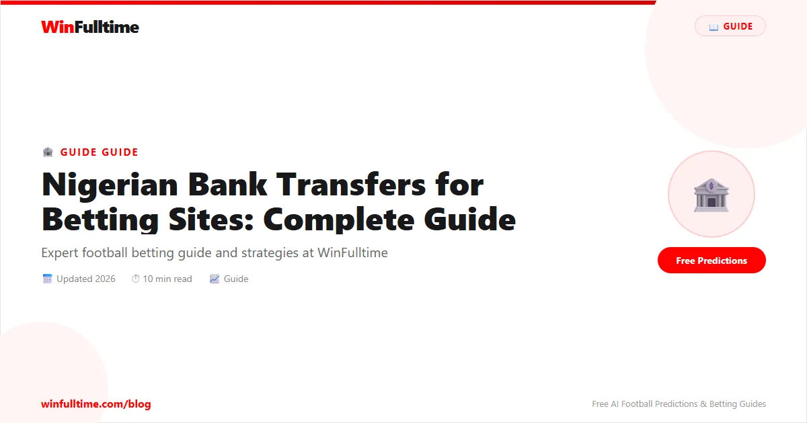

Nigerian Bank Transfers for Betting Sites: Complete Guide

Nigerian bettors have multiple ways to fund their betting accounts — from USSD transfers to internet banking and mobile app transfers. This guide covers how to use direct bank transfers to deposit and withdraw on Nigerian betting platforms like Bet9ja, Nairabet, BetBonanza, and 22Bet Nigeria.
Why Nigerian Bettors Use Bank Transfers
- Large deposits: Unlike mobile money limits, bank transfers allow high-value deposits
- No transaction fees: Most betting sites accept free Naira transfers
- Direct NGN accounts: No currency conversion needed
- Traceable: Bank statements provide transaction records
- Regulated: CBN-backed security and dispute resolution
How to Deposit via Bank Transfer
Method 1: Through the Betting Site
- Log in to your betting site account
- Go to Deposit ? Select Bank Transfer
- The site displays their designated Nigerian bank account details
- Log in to your bank app (GTBank, First Bank, Access, etc.)
- Transfer the amount to the displayed account — use your username as payment reference
- Return to the betting site and confirm the transaction
- Funds credited within 1–4 hours (sometimes instant)
Method 2: USSD Transfer (No Internet Needed)
Many Nigerian banks support USSD transfers that work without data:
- Dial your bank's USSD code (e.g., *737# for GTBank, *894# for United Bank for West Africa)
- Select Transfer
- Choose the betting site's bank
- Enter the destination account number
- Enter amount and PIN
- Confirm — money reaches the betting account
Pro Tip: Always Use Your Username as the Payment Reference
When making a bank transfer to a betting site, the payment reference is critical. Using your username ensures the site can match the transfer to your account. Without it, funds may sit in a suspense account and require customer support intervention.
How to Withdraw via Bank Transfer
Nigerian betting withdrawals to bank accounts are the standard for payouts:
- Log in to your betting account
- Navigate to Withdraw or Payout
- Select your registered Nigerian bank
- Enter your account number and account name
- Enter the withdrawal amount
- Confirm — funds arrive within 1–48 hours
Major Nigerian Banks for Betting Transfers
| Bank | USSD Code | Transfer Speed | Notes |
|---|---|---|---|
| GTBank | *737# | Fast | Widely accepted by betting sites |
| First Bank | *894# | Fast | Strong coverage across Nigeria |
| Access Bank | *901# | Fast | Growing in betting support |
| Zenith Bank | *966# | Moderate | Supported by major bookmakers |
| UBA | *919# | Moderate | Good for rural areas |
Common Issues and Solutions
Funds Not Credited
If money leaves your account but doesn't appear in your betting account, check: (1) Did you use the correct reference? (2) Is the account name/number correct? Contact the site with your transfer receipt. Most betting sites have dedicated WhatsApp support.
Bank Flagging the Transaction
Nigerian banks may flag transfers to betting operators. If this happens, call the bank's customer service and confirm intent. Using established bookmakers like Bet9ja reduces this risk as banks are familiar with their accounts.
The Bottom Line
Bank transfers are the most reliable method for high-value Nigerian betting transactions. Use the betting site's direct transfer method, always include your username as the payment reference, and complete verification early to ensure smooth withdrawals.
Bet Responsibly
Only bet with disposable income. Set deposit limits through your betting account. For help, visit GamCare.